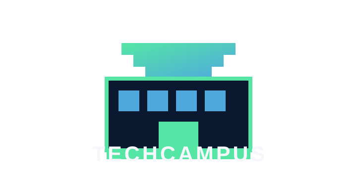
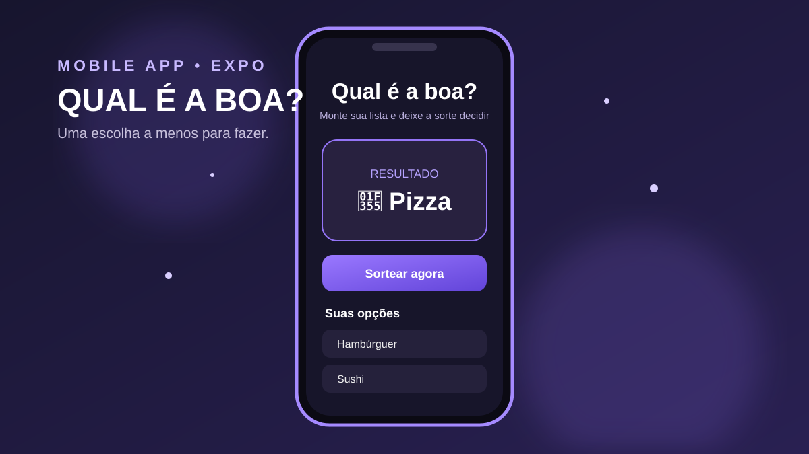
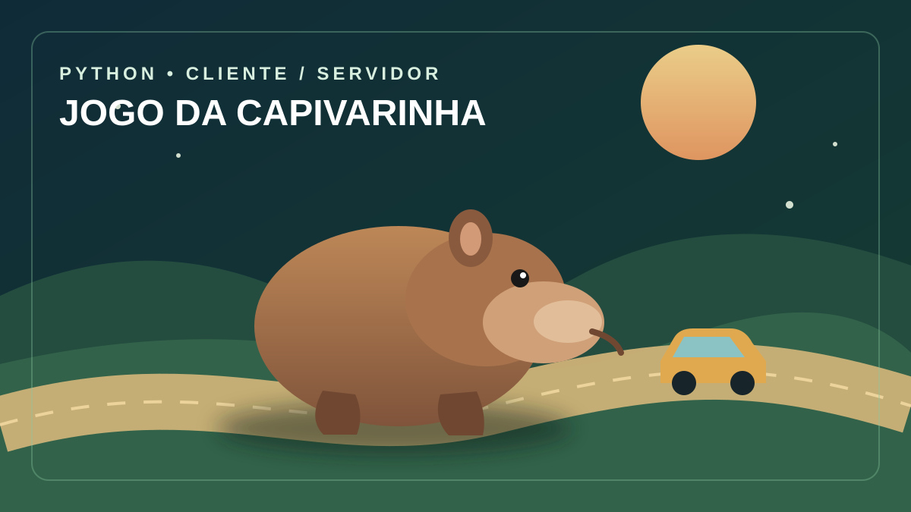
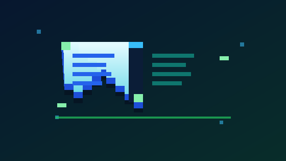

Front-end
interface & experiência
PLAYER 01 · ONLINE
Desenvolvedor de Sistemas em formação
Construo soluções digitais com código, tecnologia e design — movido pela curiosidade e pelo desejo de resolver problemas reais.
Aos 18 anos, sou estudante de Desenvolvimento de Sistemas no SENAI e aluno do SESI Guarulhos desde 2015. Sou um desenvolvedor apaixonado por criar arquiteturas eficientes e interfaces intuitivas. Minha jornada na tecnologia é movida pela curiosidade e pelo desejo de resolver problemas reais através de software de qualidade.
Com foco contínuo em boas práticas e código limpo, busco sempre evoluir minhas habilidades técnicas e compreender profundamente as necessidades dos usuários. No tempo livre, gosto de videogames, música, leitura e edição de vídeos. Guiado pela fé, enfrento novos desafios com coragem e resiliência para o meu crescimento pessoal e profissional.
Desenvolvimento de Sistemas
Aluno desde 2015
Base de operações
Videogames, música, leitura e edição de vídeos
Boas práticas e código limpo
Busca constante por evoluir na tecnologia
“Não fiquem com medo, pois estou com vocês; não se apavorem, pois eu sou o seu Deus. Eu lhes dou forças e os ajudo; eu os protejo com a minha forte mão.” — Isaías 41.10
As tecnologias que estudo e uso nos meus projetos, organizadas por área. Selecione uma habilidade para ver os detalhes.
interface & experiência
lógica & servidores
dados & persistência
apps & dispositivos
conectividade & dispositivos
fluxo de trabalho
Os três projetos que melhor representam minha evolução em desenvolvimento web, mobile e Python.

SISTEMA WEB · FULL STACKSistema web para gestão da AAPM escolar, reunindo área do aluno, administração, loja, pedidos e recursos de integração com IoT.

APLICATIVO MOBILE · ARTE ILUSTRATIVAAplicativo mobile para montar listas de opções e sortear uma escolha, inclusive ao chacoalhar o celular.

PYTHON · CLIENTE / SERVIDOR · ARTE ILUSTRATIVAJogo em Python com comunicação entre cliente e servidor, no qual o jogador tenta descobrir o número e salvar a capivarinha.
Aluno do SESI Guarulhos desde 2015, construindo minha base acadêmica e desenvolvendo conhecimentos ao longo dessa jornada.
Formação técnica em Desenvolvimento de Sistemas, com foco em lógica de programação, desenvolvimento de software e banco de dados.
Experiência profissional como Jovem Aprendiz no Consórcio Cantareira.
Minhas formações organizadas por instituição. Selecione uma categoria para consultar os certificados.
Educação profissional e qualificações técnicas
Visualizar certificados →
Empreendedorismo, criatividade e desenvolvimento
Visualizar certificados →Participações, eventos e atividades escolares
Visualizar certificados →
Educação financeira e formação complementar
Visualizar certificado →
Conhecimentos extras e formações complementares
Visualizar certificados →Um recurso extra para explorar o portfólio por comandos. A navegação tradicional continua disponível.
Sempre aberto a discutir novos projetos, ideias criativas e oportunidades de parceria no mundo da tecnologia.